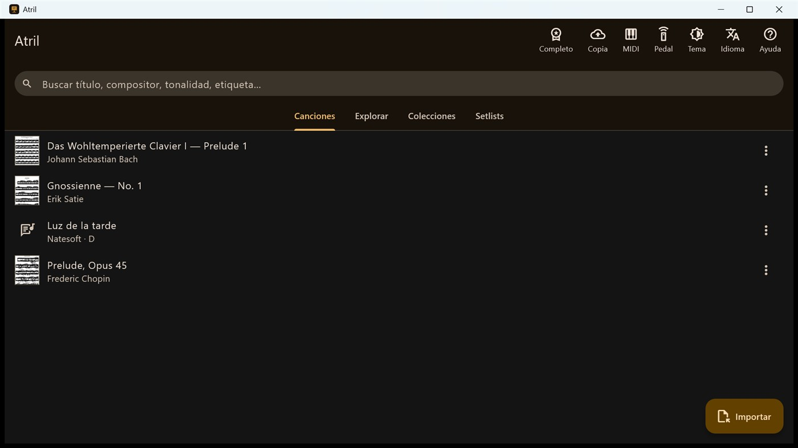
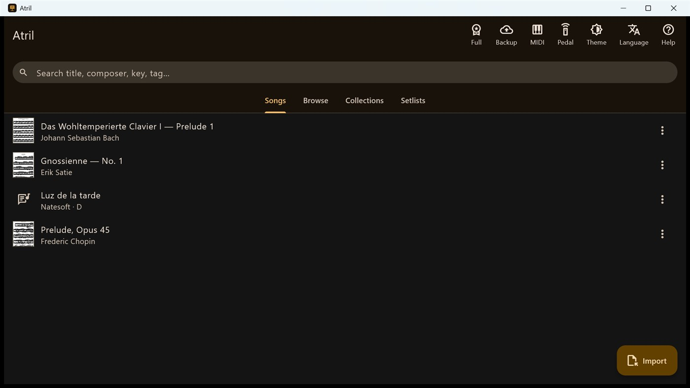

Lo que puedes hacer
What you can do
Todo lo que necesitas para ensayar y tocar, sin enredos.
Everything you need to practice and play, without the fuss.
Trae tus partituras
Bring your scores
PDF, fotos de partituras o canciones con acordes. Una por una o una carpeta entera.
PDFs, photos of sheet music or songs with chords. One at a time or a whole folder.
Pasa la página sin soltar el instrumento
Turn the page hands-free
Con un pedal Bluetooth que funcione como teclado. También con el dedo o las flechas.
With a Bluetooth pedal that works like a keyboard. Or with your finger or the arrow keys.
Setlists
Setlists
Arma la lista de cada presentación y ponla en el orden que quieras.
Make a list for each gig and put it in any order you like.
Escribe encima
Write on top
Lápiz, resaltador, texto y sellos. Tu PDF original nunca se daña.
Pen, highlighter, text and stamps. Your original PDF is never changed.
Ensaya
Practice
Metrónomo, pista de audio de cada obra y cambio de sonido en tu teclado por MIDI.
Metronome, an audio track for each song and sound changes on your keyboard over MIDI.
En 9 idiomas
In 9 languages
Español, inglés, portugués, francés, alemán, italiano, japonés, chino y coreano.
Spanish, English, Portuguese, French, German, Italian, Japanese, Chinese and Korean.
Gratis para empezar
Free to start
Atril gratis trae todas las opciones y deja tener hasta 15 obras. Con «Atril completo» tienes todas las que quieras, con una sola compra. No es una suscripción. Lo que ya tienes nunca se bloquea.
Atril Free has every feature and holds up to 15 songs. With "Atril Full" you can have as many as you want, with a single purchase. It's not a subscription. What you already have is never locked.

